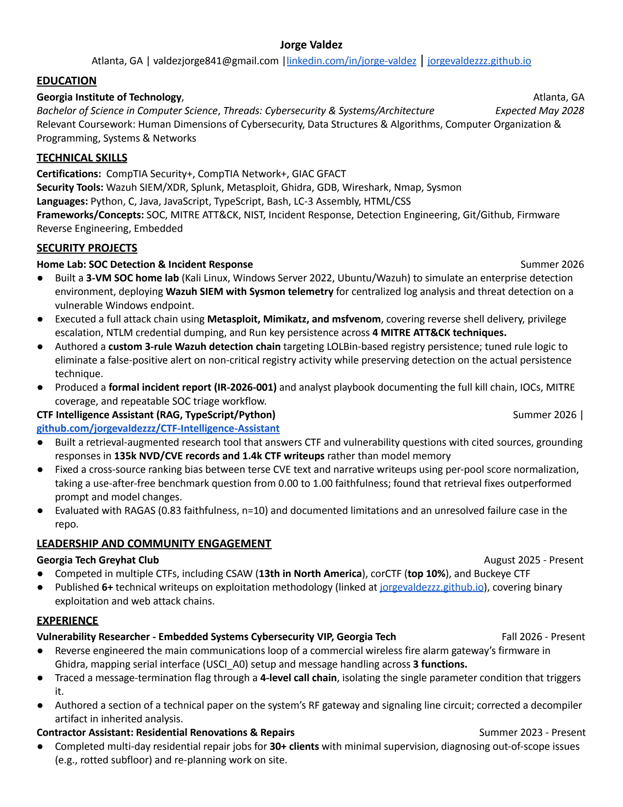

About
Jorge Valdez
I build software with an eye toward how it behaves under real conditions, and I spend most of my time at the intersection of cybersecurity, embedded systems, and low-level computing.


On this page
About
I'm drawn to work that sits close to how systems actually behave, rather than stopping at the surface of what they're supposed to do. That shows up in how I approach software: I want to understand how it's structured, how it holds up under real or adversarial conditions, and where reliability and security stop being assumptions and start being decisions someone has to make.
Most of my project work traces back to that interest. I care about clear implementation over clever implementation, documentation that actually explains a decision instead of just describing it, and treating a project as something to iterate on rather than finish once and walk away from.
Experience
Most of what I know so far has come from three overlapping sources: coursework, independent projects, and writing things down publicly as I go.
Georgia Tech, Computer Science
My coursework is centered on cybersecurity, embedded systems, and the software fundamentals that underpin both — the kind of material that's less about a specific language and more about how computing systems are put together.
Independent Project Work
Outside of class, I build personal and team projects specifically to get repetitions on implementation, architecture, and deployment — the parts of software engineering that coursework alone doesn't force you to practice. The projects below are the current set.
Security Writeups
I keep a public repository of CTF writeups so that solving a challenge isn't the end of the exercise. Writing up the approach, what didn't work first, and why the eventual solution held is where most of the actual learning gets locked in.
Skills
Areas I keep returning to across classes, CTFs, and side projects.
Focus
Tools
Projects
The detection lab and the retrieval tool come first. Writeups and the smaller apps follow.
Adversary Simulation & Detection Lab
Wazuh · Sysmon · VirtualBox
A full kill chain across three VMs, with custom Wazuh rules and an incident report.
CTF Intelligence Assistant
Hybrid retrieval
Retrieval-augmented research over a 137K-chunk corpus (135,839 NVD/CVE records and 1,456 CTF writeups). Faithfulness 0.827.
CTF Writeups
Notes from challenges: the approach, what failed first, and why the solution held.
Chess Web App
Python · JavaScript · HTML · CSS
A multi-phase chess application built to practice full-stack development, from game logic to a deployed browser interface.
BridgeOut
Python · Django · HTML · CSS
A team-based web application where the real challenge was software design and coordinating changes across a shared codebase.
Movie Store
Python · Django · HTML · CSS
A project built around object-oriented design first, aimed at a modular, maintainable structure rather than just a working store.
Contact
The best ways to reach me are below, or through the resume link at the top of the page.